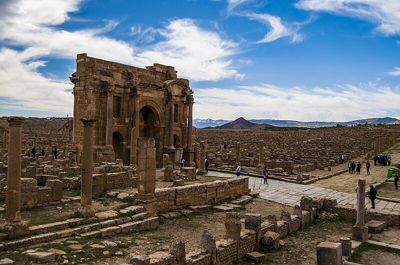

Timgad ou Thamugadi (colonie Marciana Traiana Thamugadi en latin), surnommée la « Pompéi de l'Afrique du Nord »1 est une cité antique située sur le territoire de la commune homonyme de Timgad, dans la wilaya de Batna dans la région des Aurès, au Nord-Est de l'Algérie.
Elle fut fondée par l'empereur romain Trajan en 100 et dotée du statut de colonie. Il s'agit de la dernière « déduction de colonie » en Afrique romaine, c'est-à-dire d'une colonie essentiellement peuplée de citoyens romains (souvent d'ailleurs d'anciens soldats). Bâtie avec ses temples, ses thermes, son forum et son théâtre, la ville, initialement d'une superficie de 12 hectares, finit par en occuper plus de 90. Au vu de son excellent état de conservation et du fait qu'on la considérait comme typique d'une ville romaine, Timgad a été classée au patrimoine mondial de l'humanité par l'UNESCO en 1982. La conservation du site soulève cependant un certain nombre de problèmes.